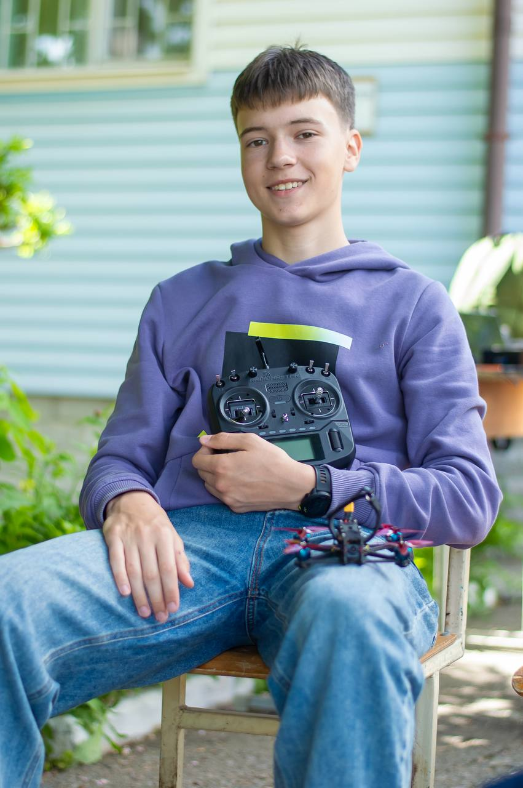

Привіт! Мене звати Артем. Я учень 11 класу Ліцею №38 імені Івана Павловського Полтавської міської ради.
Моє головне захоплення — FPV Drone Racing, і я активно розвиваюся як пілот гоночних дронів.
Почав займатися FPV у 2024 році та поступово перейшов від початкового інтересу до професійних тренувань і участі у змаганнях.

Я починав взагалі не з дронів, а з авіамодельного спорту, яким займався протягом року.
Перехід на гурток став відправною точкою моєї історії як пілота дронів і безпосередньо гоночного FPV пілота.
Спочатку тренувався на симуляторі, потім літав на дронах DJI Mavic, і вже після цього пересів на справжні FPV дрони.
Почав регулярно тренуватися, вдосконалювати техніку пілотування та збирати власні дрони. Зараз активно беру участь у різноманітних змаганнях і працюю над покращенням результатів.
Відкриті змагання з квадрокоптерів Київського Палацу дітей та юнацтва
16.11.2025Полтавські обласні змагання учнівської молоді з авіамодельного спорту
16.05.2026Відкриті змагання з керування БПЛА “Iron Core Cup” м.Горішні Плавні
13.06.2026Всеукраїнські відкриті змагання з авіамодельного спорту (IV ранг) м.Київ
27-29.03.2026Всеукраїнські відкриті змагання з авіамодельного спорту (IV ранг) м.Мукачево
19-21.06.2026Продовження активного розвитку у FPV та участь у доступних змаганнях.